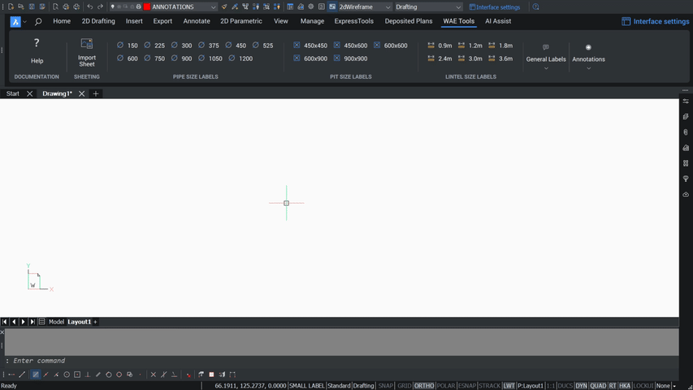

Preset Labels
The ribbon carries the standard WAE labels as buttons, so the common annotations are one click rather than typed each time.

Placing a label
Click the label you want, then: Specify point to place text: →
Specify rotation: (a second point — pick the same point for horizontal). It keeps
looping so you can place the same label repeatedly; Esc finishes.
Pipe sizes
Ø150, Ø225, Ø300, Ø375, Ø450, Ø525, Ø600, Ø750, Ø900, Ø1050, Ø1200 and Ø1300.
Pit sizes
450×450, 450×600, 600×600, 600×900 and 900×900.
Lintel sizes
0.9 m, 1.2 m, 1.8 m, 2.4 m, 3.0 m and 3.6 m.
Status labels
Provided, Not Provided, Constructed, Not Constructed, Removed, Installed, Not Installed, Under Construction, Limit of Construction and Observed.
Tick symbol
WAETICK inserts the WAE tick repeatedly until you press Esc.